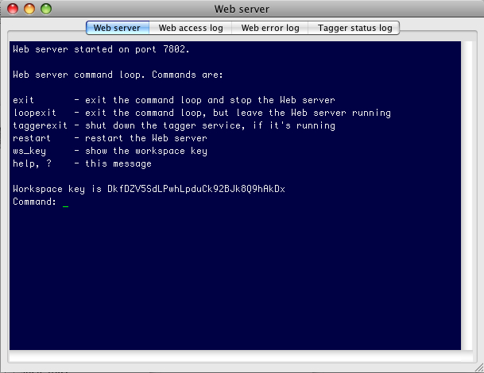

The Web application server is a threaded server which provides
services to the Web UI, as well as supporting the tagger broker.
By default, the application server also starts up a command loop
which allows the user to start up and shut down various portions
of the application. The application server supports CGI access for
some services, and XML-RPC for others. The service API is intended
to be internal; it will be documented at a later point.
The native MAT Web server is not
an enterprise-secure implementation, and will never be one.
It does not use SSL, and it does not provide any security
logging or traceability. You should assume that anyone who has
access to your network can see your Web server traffic. Also, at
the moment, it is not possible to run MAT under another, more
secure Web configuration.
Note: the Web application
server inventories the tagger models it makes available in file
mode at startup time. If
you build a model after you start the Web server, the Web server
won't know about that model until you restart it. (This condition
does not apply to workspaces.)
When you start up the Web server, and it's running a command
loop, you see something like this:
Web server started on port 7801.
Web server command loop. Commands are:
exit - exit the command loop and stop the Web server
loopexit - exit the command loop, but leave the Web server running
taggerexit - shut down the tagger service, if it's running
restart - restart the Web server
ws_key - show the workspace key
help, ? - this message
Workspace key is w65gABlWFKYSdZwXCHaspyhW0DySP7ZW
Command:
These commands should be self-explanatory. The command that you're most likely to use is "ws_key", which prints out the workspace key that the Web server knows. The workspace security documentation explains the importance of this key.
On Windows, it's not possible for the Web server to restart if
it's running in a terminal (so the "restart" command will fail, if
you want, e.g., to restart because you've added a new task).
Automatic midnight restarts for the service configuration still
work.
Unix:
% $MAT_PKG_HOME/bin/MATWeb
Windows native:
> %MAT_PKG_HOME%\bin\MATWeb.cmd
Usage: MATWeb [options]
| --port <num> |
Port to listen on (default is
7801). |
| --noscreen |
Don't report Web errors and
access to stdout. |
| --access_log <file> |
Absolute pathname of intended
access log file. If absent, the Web access information will
be written to standard output, unless --noscreen is
specified. |
| --error_log <file> | Absolute pathname of intended
error log file. If absent, the Web error information will be
written to standard output, unless --noscreen is specified. |
| --tagger_log <file> | Absolute pathname of intended
tagger log file. If absent, tagger service status output
will be routed to standard output. |
| --clear_logs |
Clear the logs before
startup. |
| --no_cmdloop |
Don't start up an interactive
command loop. |
| --no_tagger_service |
Don't start up the tagger
service. |
| --localhost_only |
Accept connections only from
localhost or 127.0.0.1. |
| --log_rotation_count
<n> |
Rotate logs on restart, and
keep only n logs |
| --midnight_restart |
Restart automatically at
midnight (useful for rolling over logs) |
| --workspace_key <k> |
Use the specified key as a
workspace key. This flag is used mostly when the server
automatically restarts after an error, so the user doesn't
need to change the workspace key in the UI. However, it can
also be used explicitly, e.g., to associate a
previously-agreed-upon "password" for the workspaces. WARNING: the key will be visible in process listings. If you want something more secure, use --workspace_key_file. |
| --workspace_key_file
<f> |
Like --workspace_key, but
more secure. The key file should be readable only by the
user starting up MATWeb, and should be a UTF-8 file
containing the workspace key. |
| --workspace_key_file_is_temporary |
If --workspace_key_file is
provided, remove the key file immediately after startup. |
| --allow_remote_workspace_access |
By default, workspaces only
permit access from local clients. If this flag is specified,
the server allows workspaces to be accessed by clients on
remote hosts. |
| --workspace_container_directory
<dir> |
By default, when the user opens a workspace from the UI, she must provide a full pathname. If you provide this option, which is repeatable, and the user provides a partial pathname, the server will search in each of the candidate container directories for a workspace at the location indicated by the partial pathname. If this option is provided, the user will no longer be able to specify a full pathname, in order to circumscribe remote access when MATWeb is being run as a persistent service. |
| --supersede_existing_server |
If specified, terminate any
MATWeb server running on the requested port on this machine,
if the current user has permission to do so. |
| --output_log <log> |
Redirect all stray output from stdout and stderr to this log. This file should be readable only by the user starting up MATWeb, since the workspace key may be written to this log. |
| --as_service <dir> |
Start up MATWeb as a service.
This creates the specified log directory and starts up as if
you specified--log_rotation_count 7 --midnight_restart --allow_remote_workspace_access \This option is interpreted before all other command line options, so you can also specify options like --log_rotation_count or --access_log if you like. Options like --workspace_container_directory, --localhost_only, --workspace_key, --no_tagger_service are also respected. |
| --spawn_tabbed_terminal |
If available, spawn the Web
server in a tabbed terminal and exit. See the GUI section. The documentation for this
option when you use the --help option will
tell you whether tabbed terminals are available to you. |
For more details about --output_log, --workspace_key,
--workspace_key_file, and --workspace_container_directory, see the
section on workspace security.
MATWeb also makes the common options available.
The --spawn_tabbed_terminal option spawns the optional tabbed
terminal which is (usually) distributed with MAT. If available,
this option will start either the mrxvt tabbed terminal
application (on Unix), the Terminator tabbed terminal application
(on Mac), or the Console tabbed terminal application (on Windows),
and then exit. The tabbed terminal re-invokes MATWeb, and contains
four tabs:
Here's a screen shot of the Mac version of the tabbed terminal:
Most, but not all, command-line options are compatible with the
tabbed terminal; the ones that aren't are the ones that are
relevant to setting up a service.
If the tabbed terminal isn't available, MATWeb will start up in
the usual way on the console.
To start up the Web server listening on the default port, with a
command loop and all status messages printed to standard output:
Unix:
% $MAT_PKG_HOME/bin/MATWeb
Windows native:
> %MAT_PKG_HOME%\bin\MATWeb.cmd
To start up the Web server on port 7806, but only allow
connections from the local host:
Unix:
% $MAT_PKG_HOME/bin/MATWeb --port 7806 --localhost_only
Windows native:
> %MAT_PKG_HOME%\bin\MATWeb.cmd --port 7806 --localhost_only
To start up the Web server on the default port, but write the
status messages to different files:
Unix:
% $MAT_PKG_HOME/bin/MATWeb --access_log ./web_access.log --error_log ./web_error.log \
--tagger_log ./web_tagger.log --noscreen
Windows native:
> %MAT_PKG_HOME%\bin\MATWeb.cmd --access_log %CD%\web_access.log --error_log %CD%\web_error.log \
--tagger_log %CD%\web_tagger.log --noscreen
Without the --noscreen flag, the Web server messages will be
printed both to the files and to standard output.
On Unix, to start up the Web server as a Unix cron job, saving
logs for the previous 7 days in /etc/MAT/logs, and restarting each
midnight, enter this command line in your crontab, if MAT_PKG_HOME
is /usr/MAT:
/usr/MAT/bin/MATWeb --access_log /etc/MAT/logs/web_access.log \
--error_log /etc/MAT/logs/web_error.log \
--tagger_log /etc/MAT/logs/web_tagger.log --noscreen \
--no_cmdloop --midnight_restart --log_rotation_count 7
Caution: this mode is very, very lightly tested.
Let's say you want to distribute access to some MAT workspaces to
a range of annotators on a variety of machines, but you don't want
to force them to remember a complex workspace key or pathname. You
can specify the workspace key and the container directory for the
workspaces on the command line when you start up MATWeb. (Be sure
to distribute the workspace key to your annotators in a secure
manner, since it's our only means of security at the moment.)
Unix:
% $MAT_PKG_HOME/bin/MATWeb --workspace_key my_annotator_key \
--workspace_container_directory /path/to/dir/containing/workspaces
Windows native:
> %MAT_PKG_HOME%\bin\MATWeb.cmd --workspace_key my_annotator_key \
--workspace_container_directory C:\path\to\dir\containing\workspaces
Let's say you want to start up the Web server as a cron job, but
you don't want all the verbosity in example 4, and you also want
to specify the workspace key and the workspace container
directory, and you prefer a log rotation of 5:
/usr/MAT/bin/MATWeb --as_service /etc/MAT/logs \
--workspace_key my_annotator_key \
--workspace_container_directory /path/to/dir/containing/workspaces \
--log_rotation_count 5
This is the same as if you had specified
/usr/MAT/bin/MATWeb --midnight_restart --allow_remote_workspace_access \
--supersede_existing_server --noscreen --no_cmdloop \
--access_log /etc/MAT/logs/access.log --error_log /etc/MAT/logs/error.log \
--tagger_log /etc/MAT/logs/tagger.log --output_log /etc/MAT/logs/output.log \
--workspace_key my_annotator_key \
--workspace_container_directory /path/to/dir/containing/workspaces \
--log_rotation_count 5